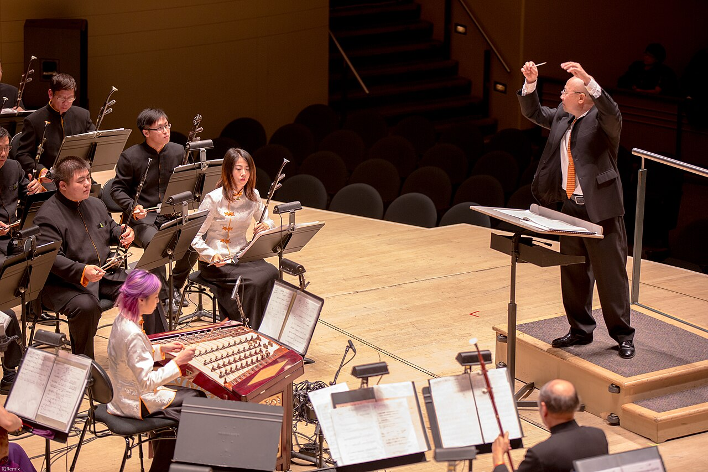

Музыка · 9-бөлім · Өлшем Music · Section 9 · Time Signatures Музыка · Раздел 9 · Размер
Өлшем — нота жолының басындағы екі сан. Ол тактідегі үлестердің санын және олардың ұзақтығын көрсетеді. A time signature is the two numbers at the start of the staff. They show how many beats are in a measure and which note value is one beat. Размер — это две цифры в начале нотного стана. Они показывают, сколько долей в такте и какая длительность равна одной доле.
↗ үстіңгі сан ↗ top number ↗ верхняя цифра
тактідегі үлес саны how many beats сколько долей
↘ астыңғы сан ↘ bottom number ↘ нижняя цифра
қай нота = үлес which note = a beat какая нота = доля
Үстіңгі сан — тактіде неше үлес бар екенін көрсетеді. Мысалы, 4 — тактіде төрт үлес. The top number shows how many beats are in a measure. For example, 4 means four beats per measure. Верхняя цифра показывает, сколько долей в такте. Например, 4 — четыре доли в такте.
Астыңғы сан — қай нота ұзақтығы бір үлеске тең екенін көрсетеді. 4 саны — ширек нота бір үлес. The bottom number shows which note value equals one beat. The number 4 means a quarter note is one beat. Нижняя цифра показывает, какая длительность принята за одну долю. Цифра 4 означает: четвертная нота = одна доля.
💡 Сонымен 4/4 = тактіде төрт ширек нота. Үстіңгі сан — санды, астыңғы сан — ұзақтықты береді. 💡 So 4/4 = four quarter notes per measure. The top gives the count, the bottom gives the duration. 💡 Значит, 4/4 = четыре четвертных ноты в такте. Верхняя — количество, нижняя — длительность.
Екі үлесті Duple Двухдольный
тактіде екі ширек two quarters per measure две четверти в такте
КҮШТІ–әлсіз STRONG–weak СИЛЬНАЯ–слабая
🥁 Марш March Марш
Үш үлесті Triple Трёхдольный
тактіде үш ширек three quarters per measure три четверти в такте
КҮШТІ–әлсіз–әлсіз STRONG–weak–weak СИЛЬНАЯ–слабая–слабая
💃 Вальс Waltz Вальс
Төрт үлесті C Quadruple C Четырёхдольный C
тактіде төрт ширек four quarters per measure четыре четверти в такте
КҮШТІ–әлсіз–орташа–әлсіз STRONG–weak–medium–weak СИЛЬНАЯ–слабая–отн.сильная–слабая
🎶 Ең жиі кездесетін өлшем The most common meter Самый частый размер
📌 2/4 және 3/4 — қарапайым (жай) өлшемдер. Әр тактіде бір ғана күшті үлес болады. 📌 2/4 and 3/4 are simple meters. Each measure has only one strong beat. 📌 2/4 и 3/4 — простые метры. В каждом такте только одна сильная доля.

✋ Әр өлшемнің өз дирижерлеу сұлбасы бар: 2/4 — төмен-жоғары, 3/4 — «үшбұрыш», 4/4 — «крест». Бірінші үлес әрқашан төмен қарай. ✋ Each meter has its own conducting pattern: 2/4 down-up, 3/4 a triangle, 4/4 a cross. The first beat always goes downward. ✋ У каждого размера своя схема дирижирования: 2/4 — вниз-вверх, 3/4 — «треугольник», 4/4 — «крест». Первая доля всегда идёт вниз.